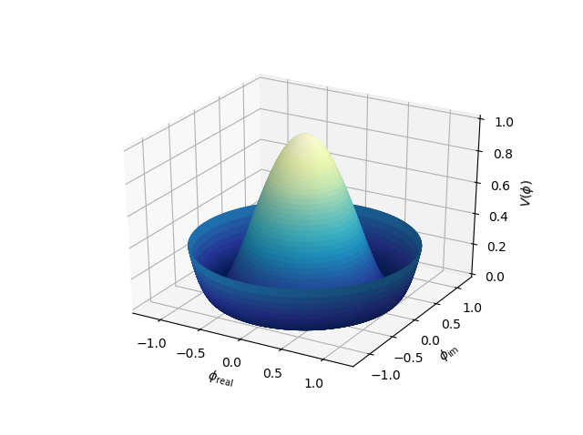

3D Surface in Polar Coordinates¶
This is a comparison to the 3D surface with polar coordinates Matplotlib example.

import numpy as np
import matplotlib.pyplot as plt
import s3dlib.surface as s3d
#.. Matplotlib Examples: 3D surface in polar coordinates
# 1. Define function to examine ....................................
def polarfunc(rtz) :
r,t,z = rtz
R = 1.25*r # radial direction scaled [0,1] -> [0,1.25]
Z = ((R**2 - 1)**2)
return R,t,Z
# 2. Setup and map surface .........................................
surface = s3d.PolarSurface(6)
surface.map_geom_from_op( polarfunc ).shade()
#surface.map_cmap_from_op( lambda rtz : rtz[2] , 'YlGnBu_r').shade(.5)
# 3. Construct figure, add surface, and plot ......................
fig = plt.figure()
ax = plt.axes(projection='3d')
maxmin = (-1.3,1.3)
ax.set(xlim=maxmin, ylim=maxmin, zlim=(0,1))
ax.set_xlabel(r'$\phi_\mathrm{real}$')
ax.set_ylabel(r'$\phi_\mathrm{im}$')
ax.set_zlabel(r'$V(\phi)$')
ax.add_collection3d(surface)
plt.show()
Notice in this example, the function is actually ‘defined’ in polar coordinates since PolarSurface object is defined with these native coordinates. Alternative default surface color is applied using a colormap mapped in the z-coordinate direction by uncommenting the highlighted line. For the colormap, a lambda expression was used. Alternatively, a function could be defined explicitly as:
def cmap_Z_dir(rtz) :
r,t,z = rtz
return z
and then that function used for the map_cmap_from_op argument. When the cmap coloration is used, the following plot results:
